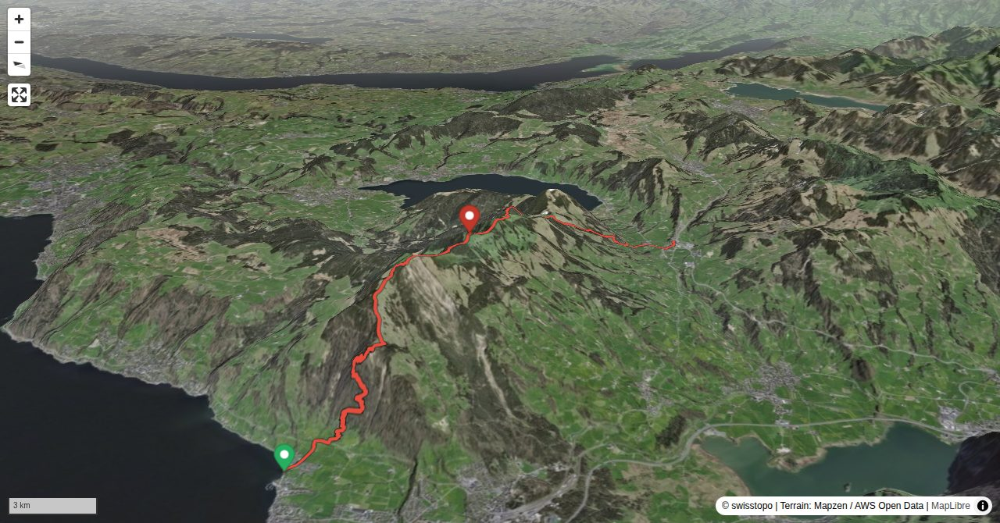

The wide Rossberg, the highest peak of the canton of Zug, has its highest elevation on Wildspitz, where a popular inn is located. From all sides numerous trails go up to the ridge. On this tour you hardly ever hike alone. However, there are some less popular itineraries. Two of them, one for the ascent, one for the descent, are presented here.
Quick Facts
| Summit elevation | 1579 m |
|---|---|
| Difficulty | SAC T3+ Check the route notes below for terrain and commitment level. Guide |
| Trailhead | Arth, Klostermatt |
| Region | Pre-Alps |
| Canton | Schwyz |
| Distance | 12.8 km (out-and-back) |
| Total ascent | ~1279 m |
| Elevation range | 416-1579 m |
| Route sources | SAC Route Portal |
Photos


Planning
↓ Download GPX
i
Map tiles: © swisstopo
(CC BY 3.0) | © OpenStreetMap contributors |
Map library: Leaflet.
Route line is approximate — verify against the SAC Route Portal before going.
12.8 km total
↑ 1279 m ascent
↓ 906 m descent
max 1579 m
steepest 71%
i
Trail difficulty per segment: OSM
Elevations computed from the inlined GPX track (SwissTopo height API).
sac_scale (precise T1–T6) with
swissTLM3D Wanderwegart
fallback where OSM is silent (coarser T2/T3 and T4+ buckets).
Coverage: OSM 74.3% · swisstopo 8.4% · unknown 16.2%.Elevations computed from the inlined GPX track (SwissTopo height API).
Loading forecast…
Start: Arth, Klostermatt (416 m)
End: Sattel-Aegeri, Bahnhof (769 m)
3D Terrain View

Route Details
From Arth to Sattel
Terrain & safety
The difficulties are limited to two metal ladders (a short one on the ascent towards Bigstein and a longer one on the descent from Leiterenflue).
Source: SAC Route Portal
Field Reference
| Trailhead | Arth, Klostermatt | 47.06980, 8.52770 |
|---|---|---|
| Summit | Wildspitz Rossberg (1579 m) | 47.08448, 8.57761 |
| End | Sattel-Aegeri, Bahnhof (769 m) | 47.08156, 8.63386 |
Coordinates are WGS84 decimal degrees (lat, lon). Emergency: 112 (general) or 1414 (Rega air rescue). Page URL: